Excellence delivered.
Driveways, concrete and earthworks, done right.
Kodiak Group constructs driveways, paths, retaining walls and drainage across Porirua and the wider Wellington region. Our team manages the excavation, council consents and site clean-up from start to finish.
- Based in Porirua
- Free quotes
- Residential and commercial
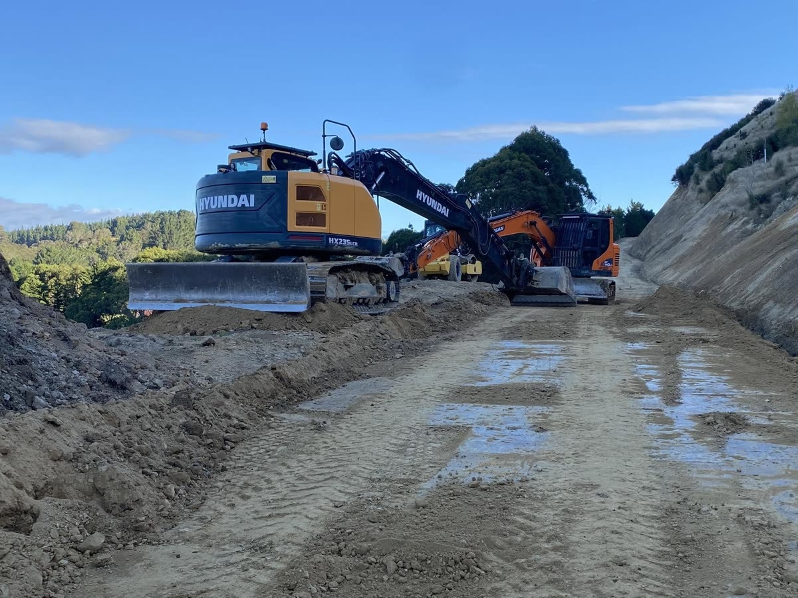
Our services
For residential, community, rural and commercial clients.
Concrete
- Driveways
- Paths, slabs and pads
- Exposed aggregate
- Glow-in-the-dark stones
Asphalt
- Asphalt driveways
- Car parks
- Kerb and vehicle crossings
- Council plans managed
Earthworks
- Building site cut and fill
- Excavation and levelling
- Retaining walls
- Drainage and stormwater
Trees and rural
- Tree removal and forestry
- Farm tracks and firebreaks
- Landscaping, decks and fences
- Digger and truck hire
Tell us what you need and we will arrange a site visit.
Our process
Site visit and quote
We visit the site, take measurements and provide a quote promptly.
Plans and approvals
Where council plans or traffic management are required, we prepare and submit them.
Construction
Our crew completes the work and keeps you informed with progress photos.
Clean-up and handover
The site is left tidy and the work is completed at the quoted price.
Council plans and approvals managed
For vehicle crossings and larger projects, Kodiak Group prepares the plans, submits them to the council and arranges traffic management on your behalf.
Discuss your projectWhat our clients say
“It was a brilliant experience working with Arran and his team. From the quoting and paperwork (which included amazingly a photo of exactly what the finished product would look like) through the contract signing then completion of the work, Arran kept in constant accurate communication with us. Weather inevitably caused delays when summer finished, but again the communication was great and the follow up was accurate. This was not a small or easy job, with a long driveway and large turn around area. We are delighted with the finished product and would happily recommend Arran and his team.”
Adrian Douglas“We got Kodiak Group back in for a second time to put in an exposed driveway and extensive drainage system. We are absolutely stunned by the workmanship and it’s a pleasure coming home every day and experiencing the thrill of our new property feature. It was a pretty enormous job, almost 410m². I’m more than happy to recommend these guys and offer their prospective clients a tour of the work they have done on our property, Thanks again team.”
Terry Mallia“Arran dug up our existing driveway, removed all the materials and put down a beautiful new driveway for us. A reasonably big job - about 200 sq metres of driveway with some tight spaces. Arran and his crew were efficient and professional. The progress they made in the first week exceeded our expectations. The job was completed within the quoted timeframe, despite us extending the scope of the job after he started. We are highly satisfied with the completed job. Arran took the time to address any concerns we had and was happy to explain fully any technical questions asked of him. He had a helpful and friendly approach. Where possible, he recycled the old asphalt - good for our pocketbook and the environment! We have no hesitation in recommending Arran and his crew.”
Jit Lim“Kodiak Group Recently completed a large asphalt carpark project down here at St Barnabas Presbyterian Church in Mana Top class workmanship and deep dedication to delivering quality work We invite prospective clients to visit the church and inspect their work. Found Arran very easy to get along with and the project was managed superbly”
Ricky Wang“Had a tricky little pathway done around the back of my place by Arran and his crew. The communication was brilliant and he is so easy to get along with which was a big factor in deciding to use Kodiak. On the day everything went super smooth, Arran is experienced and commanded the job very well, ensuring that not too much concrete was getting ahead of him during placement. They stayed until late in the evening ensuring everything was done correctly. Would definitely recommend Kodiak Group to anyone else needing concreting or earthworks done. Competitive and professional with attention to detail. Cheers Arran!”
Mark Grantham“Excellent workmanship and quality service, Arran has done two jobs for me now, both top quality. Happily recommend to others looking for a tradie to complete concrete and earth works.”
Rob Taylor“Found Arran and his team to be professional, and complete work to a high standard. The job was a vehicle crossing at our island Bay home. He handled the consenting designs, traffic control and took all the stress out of process for us. Thanks guys”
Zeke Bray“Recently had a driveway done by Arran and his team. Top notch workmanship and they came up with designs and visuals we hadn’t even considered. Will try and get around to posting photos soon, but they did this amazing thing with glow in the dark stones in the concrete mix and at night they glow like stars ! Can’t recommend them enough”
dat graham“Arran was amazing. He drew up plans, submitted to Council and coordinated everything. Highly recommended. Kerb crossing”
Hugh Wiffen“Excellent job from Arrvan The excavator operator was very skilled, professional, and efficient. They completed the work exactly as requested and paid attention to every detail. The site was left clean and tidy, and the whole job was done on time. I’m very happy with the quality of the work and would definitely recommend them to anyone needing excavation services. Thank you for a job well done!”
Rambik Lian“Had Arran do a driveway job at my place, access was really tight and not ideal. Arran was fast, pleasant, good comms throughout and did a great job. recommended.”
Nathan x“Outstanding job on our stormwater retention pond and filtration system. Everything was delivered on time, to spec, and works exactly as designed. Great communication and a very professional. Highly recommend”
Brooke Haftka“Arran and Casey finished a farm track for us on our property, we were so impressed by what they could do with the machinery on site. The track is sitting up on a very high and steep drop off and with their newly cut and metalled road I feel very safe using the track in our farm vehicle to get to the other parts of our station”
Aidan“Arran and company extended our carport to a good finish. I am impressed with his initial dealings from prompt quotes, site assessment and realistic budget. Arran keeps us updated the status of the project thus we are not guessing the start and end dates of their activity.”
Jess Arboleda“Arran did my driveway entrance in Waitarere Beach. He got onto the job within days of the quote being accepted. As i wasn't on site, he kept me up to speed with the job progress with pics and videos. Came back and did the clean up and did a fabulous job. I would highly recommend Arran for any such work!”
Darren Bailey“Great work from Arran. Good communication and reliable. He got the job done quickly and as described. Did a nice job levelling out the side of my house and laying sleepers to form garden beds. Would recommend!.”
David Leeming“Very impressed with Kodiak Group the outcome of our driveway, and walk way along side our house. Came out as described, tidy finish, within the quoted amount, and left tidier than when they started. Good work lads. Will recommend 👍”
Maccas“Rented a digger and truck for a couple of days. Arran was super helpful and flexible with the timings. He even helped me tidy up the last bit. Would recommend to anyone.”
Steve Kovacs“Great to work with Arran, very pleased with end result and came in at price quoted.”
Lorraine Stafford“Arran and his team did a very good job on my driveway and retaining wall. Highly recommend getting them in.”
Olivia Reese“Super fast and efficient with quality results. Love my glow in the dark stones on my driveway.. it’s a nice touch. Highly recommend”
Haylee Cummins-Duflou“Arran did a very good job of sorting out our section.Great service and price. Clear communication. Would recommend highly.”
David King“Aaron transported a digger for me at very short notice. Awesome guy. Highly recommended.”
Tim Clarges“Arran and his team did an awesome job landscaping our backyard at a reasonable price - Arran came up with a great design that we hadn’t even considered - he was great at communicating with us and I loved all the progress photos - would definitely recommend and use again 💯”
Tania“Arran and Chris from Kodiak Contracting prepped and laid a sweet exposed aggregate path from the street to our front door. I don’t think I’ve ever engaged more responsive and customer caring tradies before tbh.”
Tony Kellett“I engaged Arran's services for a small slab for a garden shed, and concrete pathway. He arrived early to do the onsite inspection, and I had the quotation within 24 hours. The quotation was within expectations.”
Phil Stanton“Arrvan did an excellent job! He was professional, hardworking, and very skilled with the excavator. He completed the work efficiently, paid attention to detail, and left everything clean and tidy. I’m very happy with the result and would highly recommend Arrvan to anyone looking for a reliable excavator operator. Thanks again for the great work!”
Ma Tung“Arran did the driveway so fast and did his best and looks good he's a very nice guy to good prices to i must say so thanks to Cody and arran”
Franky Mancine“Arran did a great job, definitely recommend his services”
Shane Kumar“Amazing company 10/10 recommend for all your contracting needs”
Mihitai Fahey“Dealing with this company we found they met their commitments and went to great lengths to make things happen for us”
Shazeal AliQuotes are free and provided promptly.
About Kodiak Group
Kodiak Group is a Porirua-based contracting company delivering concrete, asphalt, earthworks and tree services. Our projects range from small paths to 400 m² driveways and full building sites, across Porirua, Wellington, Kāpiti and Horowhenua.
Every project is measured using digital survey equipment, which allows us to provide accurate quantities and prompt quotes. Kodiak Group is a member of Civil Contractors New Zealand, Site Safe and SiteWise.
Our clients consistently highlight prompt quotes, clear communication with progress photos, tidy sites on completion and work delivered at the quoted price. We also offer specialist finishes, including exposed aggregate and glow-in-the-dark stones.
Recent projects
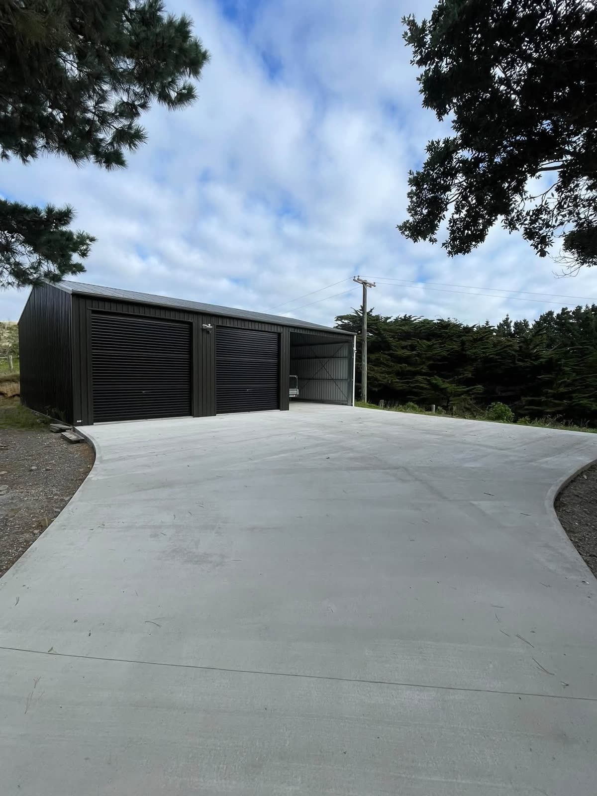
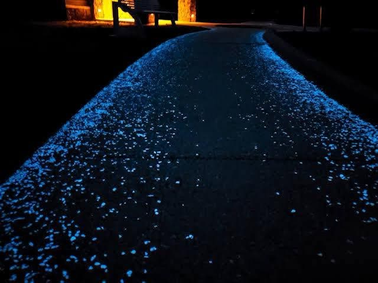
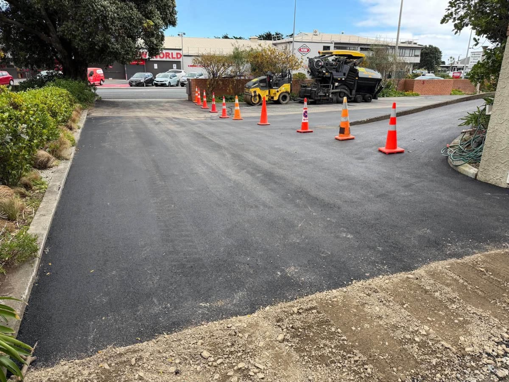
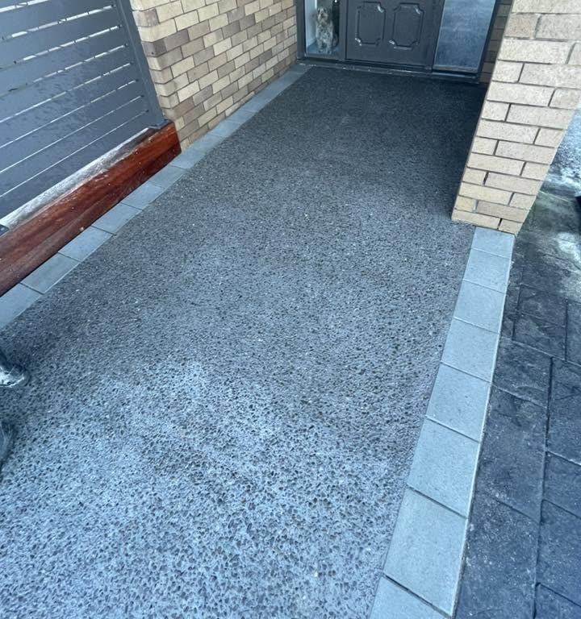
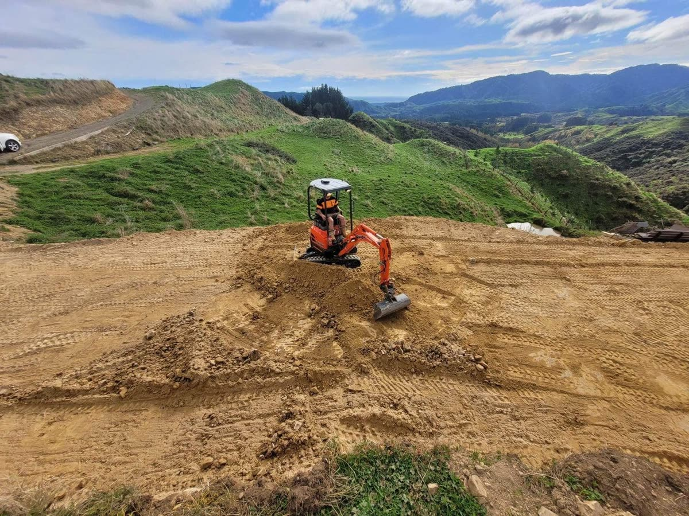
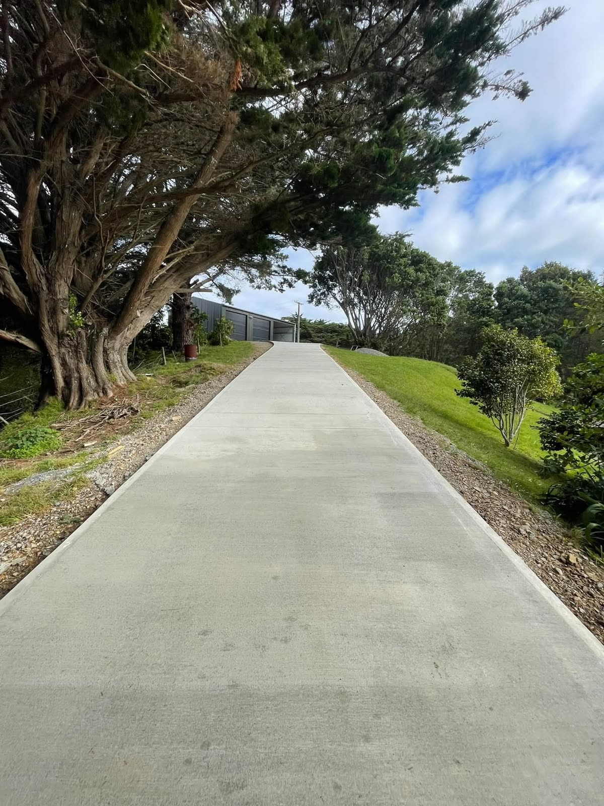
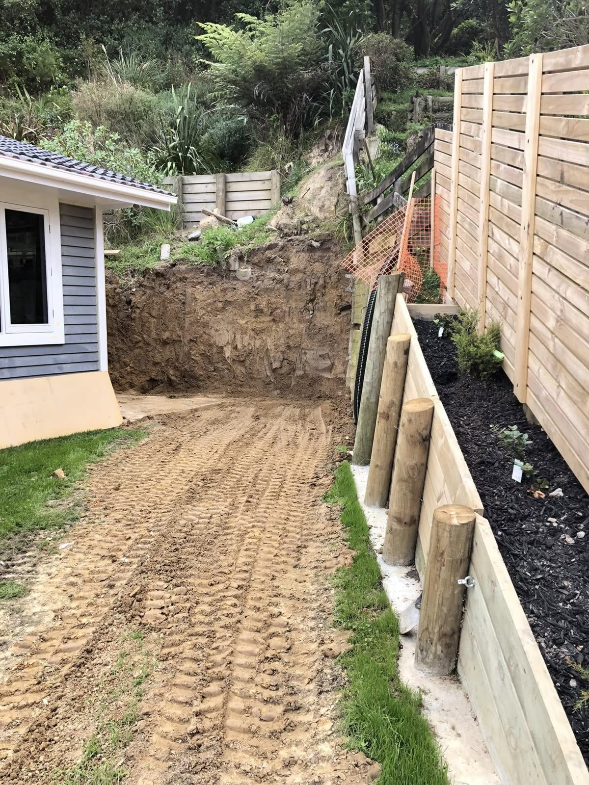
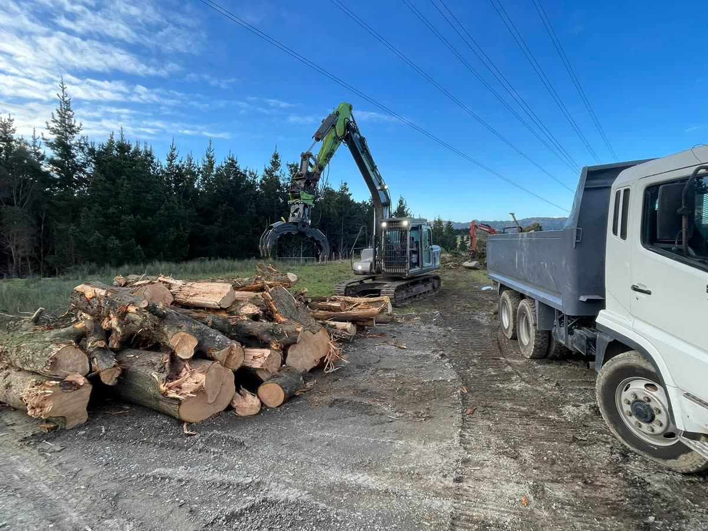
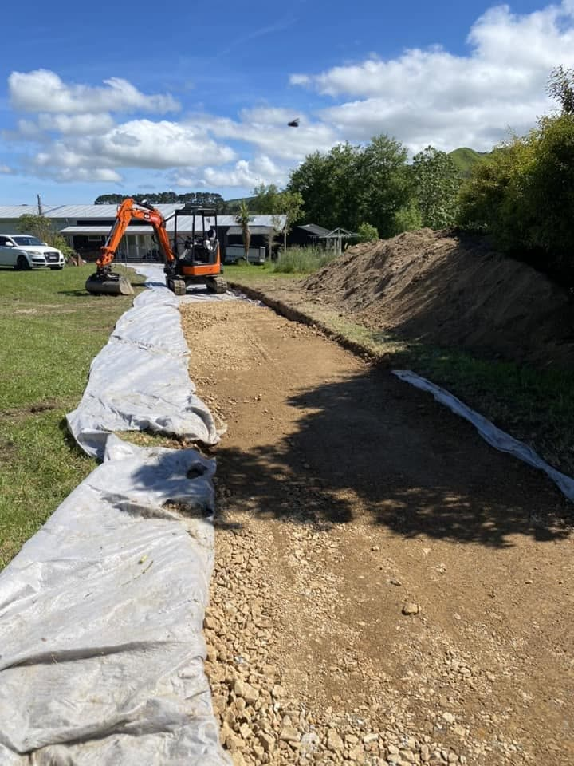
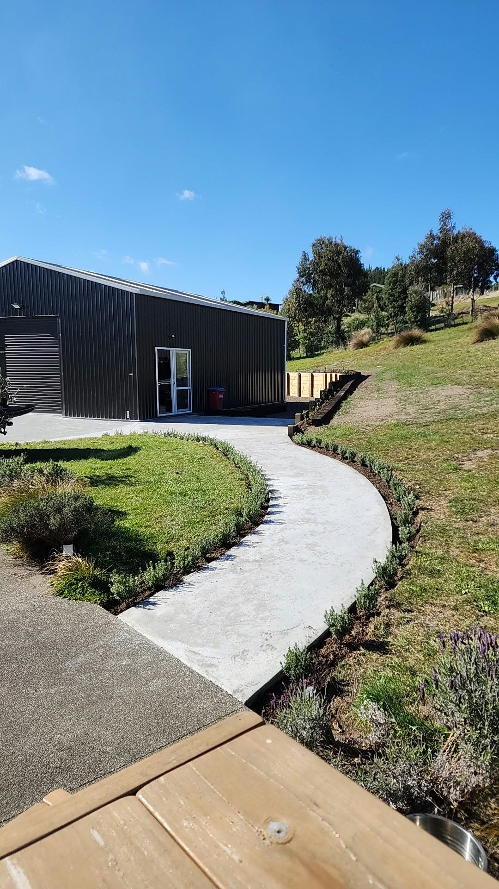
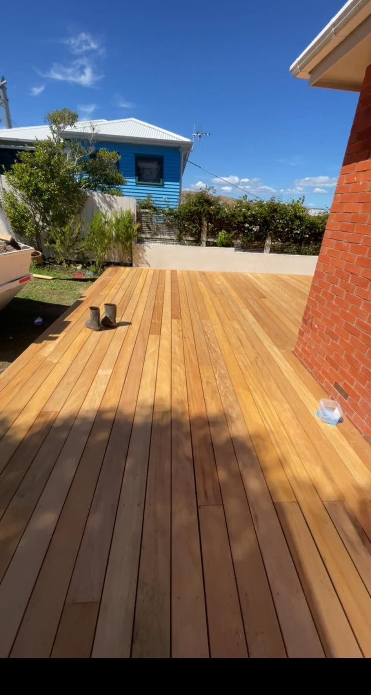
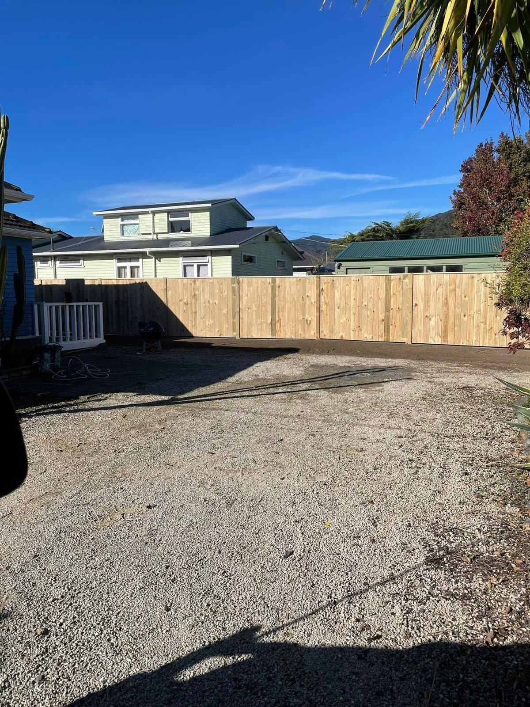
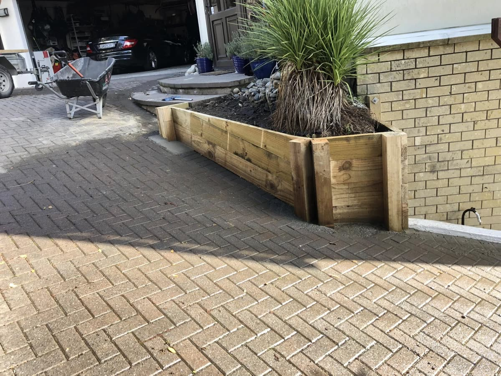
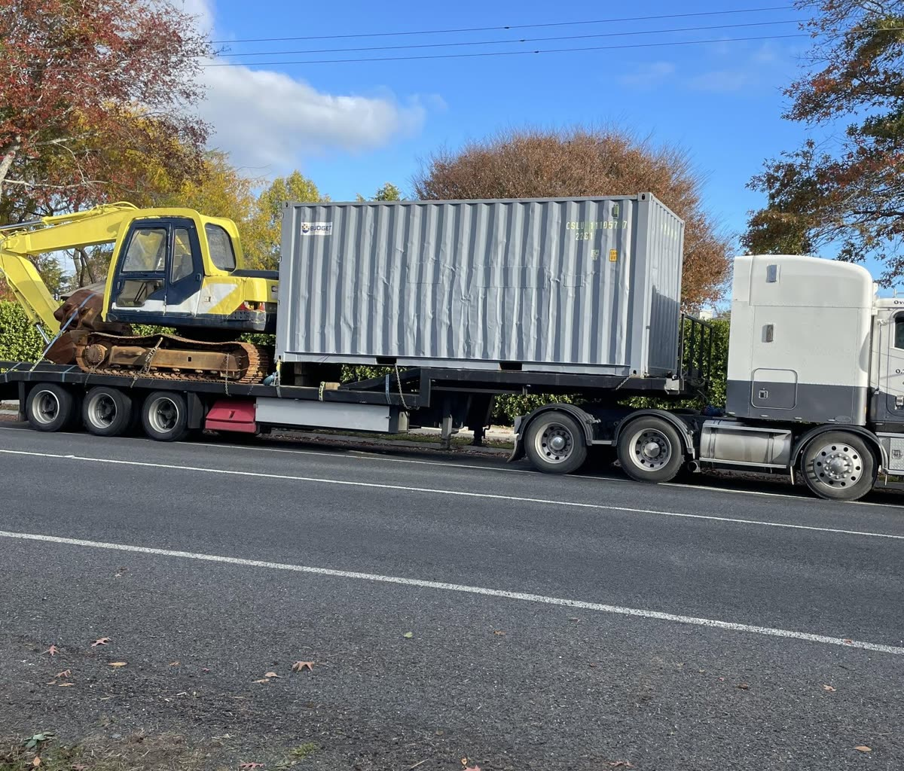
Contact our team to discuss your site.
Kodiak Group services Porirua, Wellington, Kāpiti and Horowhenua, from Island Bay to Waitarere Beach.
How far are you?
Only used in your browser, never stored.
Contact us to arrange a site visit and quote.
Request a quote
Opening hours
| Mon | Open 24 hours |
|---|---|
| Tue | Open 24 hours |
| Wed | Open 24 hours |
| Thu | Open 24 hours |
| Fri | Open 24 hours |
| Sat | Open 24 hours |
| Sun | Open 24 hours |
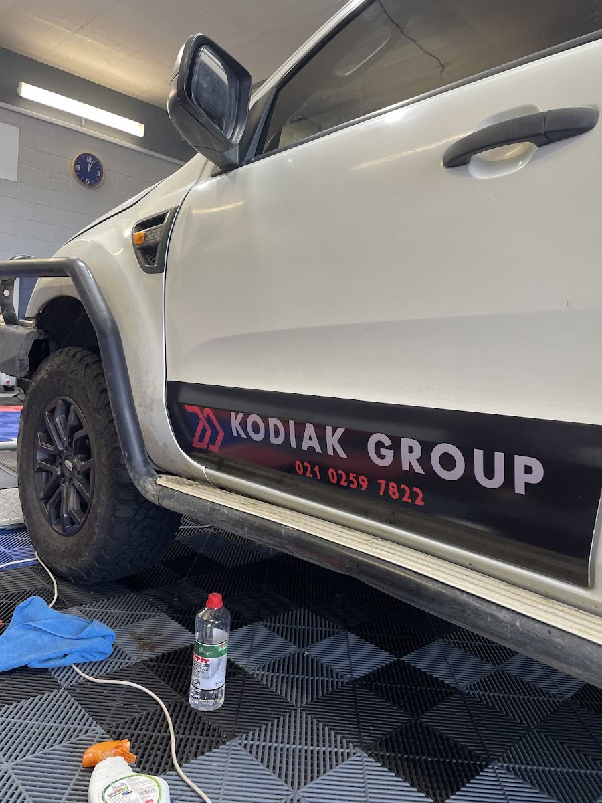